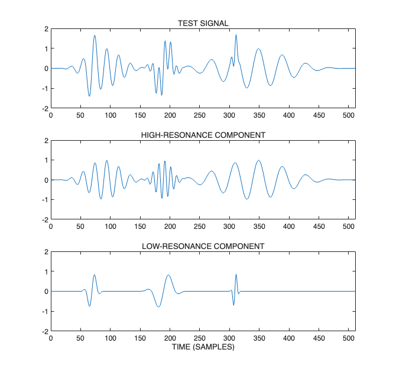
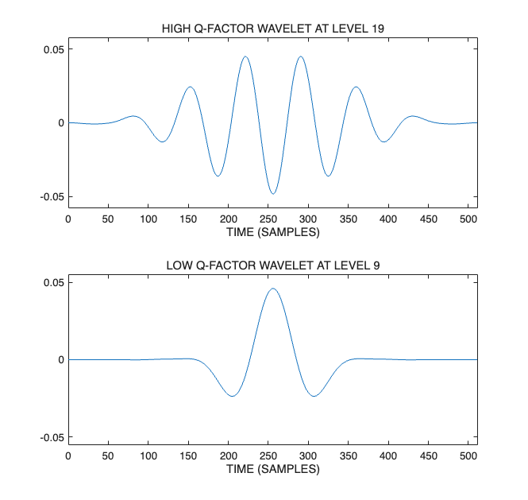
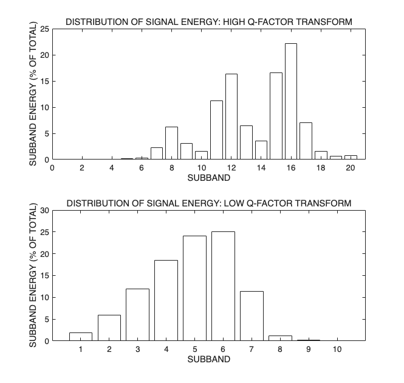
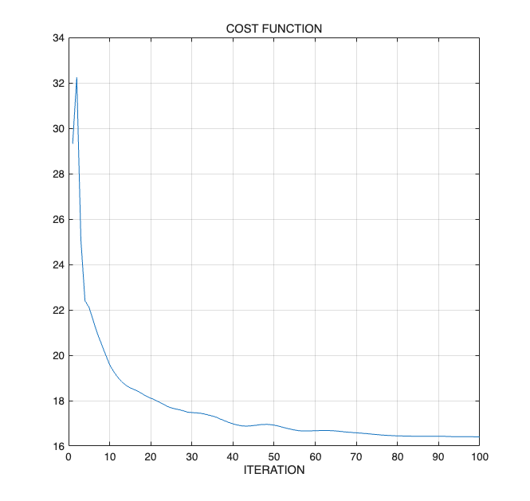
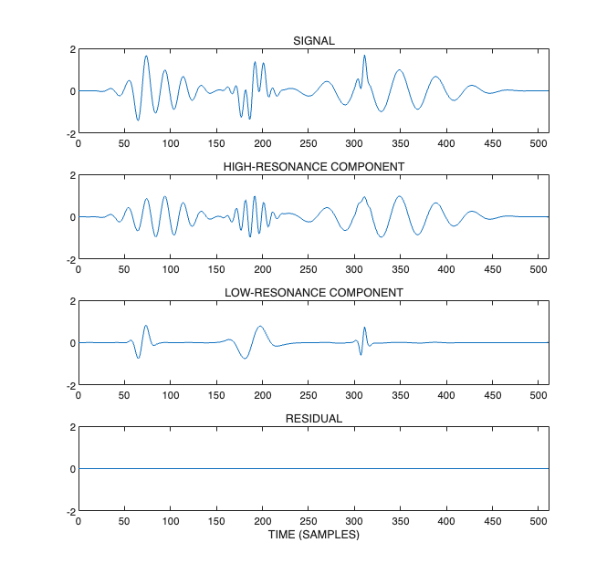
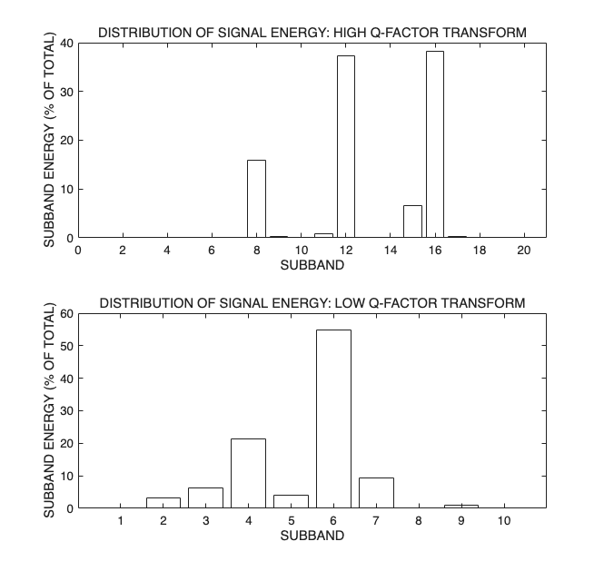

resonance_demo: Resonance-based signal decomposition
Example illustrating the decomposition of a test signal into a high-resonance component and a low-resonance component (into an oscillatory component and a transient component).
This version is based on exact equality x = x1 + x2
Reference: Resonance-Based Signal Decomposition: A New Sparsity-Enabled Signal Analysis Method. Signal Processing, 2010, doi:10.1016/j.sigpro.2010.10.018 I. W. Selesnick
Contents
Miscellaneous
close all
clear
Set example parameters
% Select one of the following two lines Example_Num = 1; % Artificial signal % Example_Num = 2; % Speech waveform % Example_Num = 3; % Artificial complex-valued signal switch Example_Num case 1 % Artificial signal % High Q-factor wavelet transform parameters Q1 = 3; r1 = 3; J1 = 19; % Low Q-factor wavelet transform parameters Q2 = 1; r2 = 3; J2 = 9; % Set MCA parameters Nit = 100; % Number of iterations mu = 0.5; % SALSA parameter theta = 0.47; % Make test signal N = 2^9; % N = 512; % length of signal x is power of 2 x1 = test_signal(5); % High-resonance signal x2 = test_signal(1); % Low-resonance signal x = x1 + x2; % Test signal (sum of high and low resonances) t = (0:N-1); % time axis fs = 1; xlabel_txt = 'TIME (SAMPLES)'; A = 2; % y-axis extent for plots % Utility to save a figure to a PDF file FS = FigureSaver('figures/resonance_demo1/'); % Display signals figure(1), clf subplot(3,1,1) plot(t,x) title('TEST SIGNAL') ylim([-A A]) xlim([0 N]) subplot(3,1,2) plot(t,x1) axis([0 N -A A]) title('HIGH-RESONANCE COMPONENT') subplot(3,1,3) plot(t,x2) axis([0 N -A A]) title('LOW-RESONANCE COMPONENT') xlabel(xlabel_txt) orient tall drawnow FS.SavePDF_fill('Signals') case 2 % Speech signal x = load('speech1.txt'); fs = 16000; x = x(:)'; N = 2^11; % length(x) t = (0:N-1)/fs; % time axis xlabel_txt = 'TIME (SECONDS)'; A = 0.3; % High Q-factor wavelet transform parameters Q1 = 4; r1 = 3; J1 = 30; % Low Q-factor wavelet transform parameters Q2 = 1; r2 = 3; J2 = 10; % Set MCA parameters Nit = 100; % Number of iterations mu = 5.0; % SALSA parameter theta = 0.5; % Utility to save a figure to a PDF file FS = FigureSaver('figures/resonance_demo2/'); % Display signal figure(1), clf subplot(3,1,1) plot(t,x) title('SEECH WAVEFORM') ylim([-A A]) xlim([0 N/fs]) xlabel(xlabel_txt) orient landscape drawnow FS.SavePDF('Signals') case 3 % Artificial complex-valued signal % High Q-factor wavelet transform parameters Q1 = 3; r1 = 3; J1 = 19; % Low Q-factor wavelet transform parameters Q2 = 1; r2 = 3; J2 = 9; % Set MCA parameters Nit = 100; % Number of iterations mu = 0.5; % SALSA parameter theta = 0.47; % Make test signal N = 2^9; % N = 512; % length of signal x is power of 2 x1 = test_signal(12); % High-resonance signal x2 = test_signal(11); % Low-resonance signal x = x1 + x2; % Test signal (sum of high and low resonances) t = (0:N-1); % time axis fs = 1; xlabel_txt = 'TIME (SAMPLES)'; A = 2; % y-axis extent for plots % Function for printing a figure to a file FS = FigureSaver('figures/resonance_demo3/'); % Display signals figure(1), clf subplot(4,1,1) plot(t, real(x), t, imag(x)) legend('REAL PART','IMAGINARY PART') title('TEST SIGNAL') ylim([-A A]) xlim([0 N]) subplot(4,1,2) plot(t, real(x1), t, imag(x1)) axis([0 N -A A]) title('HIGH-RESONANCE COMPONENT') subplot(4,1,3) plot(t, real(x2), t, imag(x2)) axis([0 N -A A]) title('LOW-RESONANCE COMPONENT') xlabel(xlabel_txt) orient tall FS.SavePDF_fill('Test_Signals') end

Verify perfect reconstruction
Check that transforms with selected parameters satisfy perfect reconstruction. (It is not really needed; just to double check.)
w1 = tqwt_radix2(x, Q1, r1, J1); y = itqwt_radix2(w1, Q1, r1, N); fprintf('Transform 1 reconstruction error = %4.3e\n', max(abs(y-x))) w2 = tqwt_radix2(x, Q2, r2, J2); y = itqwt_radix2(w2, Q2, r2, N); fprintf('Transform 2 reconstruction error = %4.3e\n', max(abs(y-x)))
Transform 1 reconstruction error = 7.772e-16 Transform 2 reconstruction error = 8.882e-16

Plot wavelets at final levels
% Compute wavelets wlets1 = ComputeWavelets(N,Q1,r1,J1,'radix2'); wlets2 = ComputeWavelets(N,Q2,r2,J2,'radix2'); figure(4), clf subplot(2,1,1) plot(t, wlets1{J1}) title(sprintf('HIGH Q-FACTOR WAVELET AT LEVEL %d',J1)) xlim([0 N/fs]) ylim(1.2*(max(abs(wlets1{J1})))*[-1 1]) xlabel(xlabel_txt) subplot(2,1,2) plot(t, wlets2{J2}) title(sprintf('LOW Q-FACTOR WAVELET AT LEVEL %d',J2)) xlim([0 N/fs]) ylim(1.2*(max(abs(wlets2{J2})))*[-1 1]) xlabel(xlabel_txt) FS.SavePDF('Wavelets')

Display energy distribution
It can be useful to know how the energy of a signal is distributed across the subbands. We display the energy in each subband. Because the transform has the Parseval's property the distribution of the energy across the subbands reflects the frequency content of the signal.
figure(5) clf subplot(2,1,1) PlotEnergy(w1); title('DISTRIBUTION OF SIGNAL ENERGY: HIGH Q-FACTOR TRANSFORM') subplot(2,1,2) PlotEnergy(w2); title('DISTRIBUTION OF SIGNAL ENERGY: LOW Q-FACTOR TRANSFORM') FS.SavePDF_fill('Energy')

Perform MCA (decomposition)
now1 = ComputeNow(N,Q1,r1,J1,'radix2'); now2 = ComputeNow(N,Q2,r2,J2,'radix2'); lam1 = theta * now1; lam2 = (1-theta) * now2; % [y1,y2,w1s,w2s,costfn] = dualQ(x,Q1,r1,J1,Q2,r2,J2,lam1,lam2,mu,Nit,'plots'); [y1,y2,w1s,w2s,costfn] = dualQ(x,Q1,r1,J1,Q2,r2,J2,lam1,lam2,mu,Nit); res = x - y1 - y2; % residual rel_res = sqrt(mean(abs(res).^2))/sqrt(mean(abs(x).^2)); fprintf('relative RMS reconstruction error = %4.3e\n',rel_res); % check % max(abs(y1-itqwt_radix2(w1s,Q1,r1,N))) % should be zero % max(abs(y2-itqwt_radix2(w2s,Q2,r2,N))) % should be zero
relative RMS reconstruction error = 3.566e-16
Compute cost function
cost = 0; for j = 1:J1+1 cost = cost + lam1(j)*sum(abs(w1s{j})); end for j = 1:J2+1 cost = cost + lam2(j)*sum(abs(w2s{j})); end fprintf('Objective function: %e\n', cost);
Objective function: 1.639732e+01
Display cost function versus iteration
The decomposition is based on minimizing a cost function by an iterative optimization algorithm (dualQ). It can be useful to inspect the value of the cost function versus the iteration number to see if the algorithm has converged satisfactorily.
figure(6) clf plot(1:Nit, costfn) xlabel('ITERATION') xlim([0 Nit]) title('COST FUNCTION') grid FS.SavePDF('Cost_Function') % check consistency between 'cost' and final value of 'costfn' cost_err = costfn(end) - cost; fprintf('Cost function calculation error: %d\n', cost_err)
Cost function calculation error: 0

Display component signals
The high Q-factor (high-resonance) and low Q-factor (low-resonance) components obtained by minimizing the cost function.
figure(7) clf subplot(4,1,1) if isreal(x) plot(t,x) else % complex plot(t,real(x), t,imag(x)) end axis([0 N/fs -A A]) title('SIGNAL') subplot(4,1,2) if isreal(y1) plot(t,y1) else plot(t,real(y1), t,imag(y1)) end axis([0 N/fs -A A]) title('HIGH-RESONANCE COMPONENT') subplot(4,1,3) if isreal(y2) plot(t,y2) else plot(t,real(y2), t,imag(y2)) end axis([0 N/fs -A A]) title('LOW-RESONANCE COMPONENT') subplot(4,1,4) if isreal(res) plot(t, res) axis([0 N/fs -A A]) else plot(t, abs(res)) axis([0 N/fs -A A]) end title('RESIDUAL') xlabel(xlabel_txt) orient tall if Example_Num == 2 orient landscape end FS.SavePDF_fill('Components')

Display energy distribution
Display the distribution of energy of the high Q-factor and low Q-factor representations obtained by minimizing the cost function.
figure(8) clf subplot(2,1,1) PlotEnergy(w1s); title('DISTRIBUTION OF SIGNAL ENERGY: HIGH Q-FACTOR TRANSFORM') subplot(2,1,2) PlotEnergy(w2s); title('DISTRIBUTION OF SIGNAL ENERGY: LOW Q-FACTOR TRANSFORM') FS.SavePDF_fill('Energy_Sparse')

Print Information
file_name = sprintf('figures/resonance_demo%d/info.txt',Example_Num); fid = fopen(file_name,'w'); fprintf(fid,'TRANSFORM TYPE: tqwt_radix2\n'); fprintf(fid,' TQWT 1: Q = %4.2f, r = %4.2f, levels = %d\n',Q1,r1,J1); fprintf(fid,' TQWT 2: Q = %4.2f, r = %4.2f, levels = %d\n\n',Q2,r2,J2); fprintf(fid,'SALSA PARAMETERS: \n'); fprintf(fid,' mu = %.3e\n', mu); fprintf(fid,' iterations = %d\n',Nit); fclose(fid);